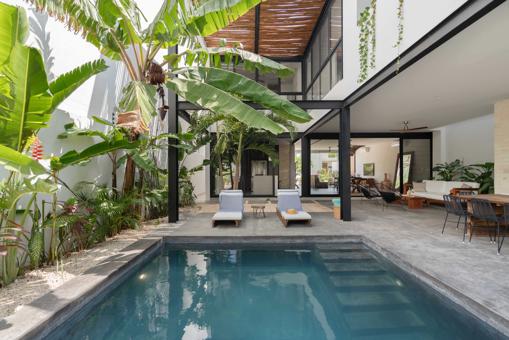

← Back to Blog
5-Day Tulum Itinerary for Villa Guests
Published March 11, 2026 · 6 min read

This itinerary is designed for guests staying at Aventuras Villas who want a balanced mix of relaxation and activity.
Day 1: Arrival + Settle In
- Airport transfer + grocery stop
- Pool and sunset dinner nearby
Day 2: Beach + Town
- Morning beach session
- Lunch and boutique walk
- Early dinner
Day 3: Cenote Day
- Start early to avoid crowds
- Pack cash and water
Day 4: Adventure / Wellness
- Pick one: excursion, diving, or spa
- Evening rooftop drinks
Day 5: Flexible + Departure
- Last-minute photos and brunch
- Checkout and transfer
Need help customizing this for families or groups? Message us before arrival.